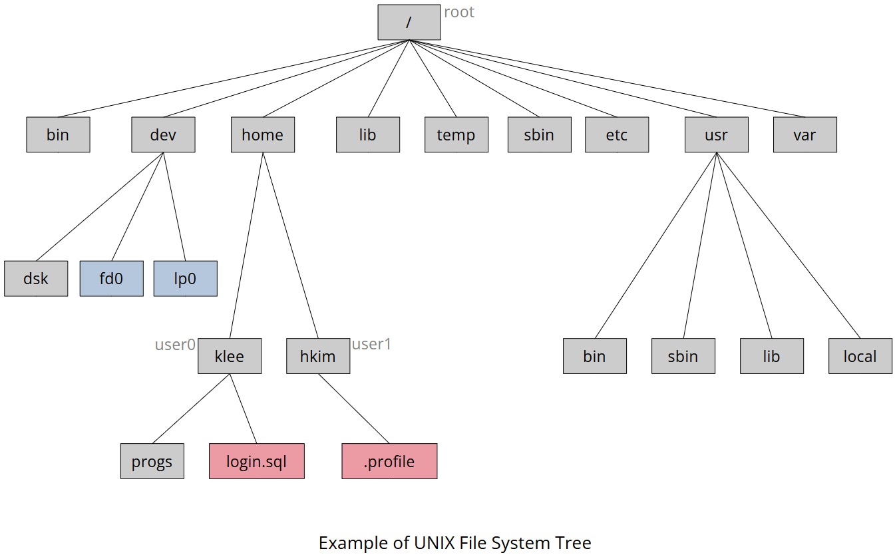

Home | Projects | Notes > Unix/Linux > UNIX Filesystem
File is a container for storing information; Simply a sequence of characters.
Three types of files:
Ordinary (regular) File
A file that contains only data as a stream of characters.
Directory File
A file that represents a folder containing the names of other files and subdirectories as well as a number associated with each name.
Always contains two special files ./ and ../ (current and parent directories, respectively).
Device File
A file that represents a device or peripheral.
To read or write a device, you have to perform these operations on its associated file.
inode
An inode (index node) is a data structure Unix-like file systems use to store information about a file. Each inode has a unique ID that identifies an individual file or other object in the file system.
inodes contain:
File type (file, directory, executable progra, etc.)
File size
Time stamp (creation, access, modiication times)
File permissions (read, write, execute)
Access control list (permissions for special users/groups)
File protection flags
Link count (number of hardlinks to the inode)
Additional file metadata
File pointers (addresses of the storage blocks that store the file contents)
Most common file type containing a stream of data.
Two types of ordinary file
Text File
Contains only printable characters.
Each line is terminated with the linefeed (LF) or newline character.
cat -e command to make the newline character visible.
od command to make all characters in a file visible.
Binary File
Contains both printable and nonprintable characters that cover the
entire ASCII range (0 to 127).
cat command used on a binary file produces unreadable output.
[!] Note: UNIX does not provide a standardized tool to differentiate a binary file from a text file. One possible way to do it is to check the file for non-printable characters; if there's none assume it is a text file, otherwise it is a binary file.
A directory file contains an entry for every file and subdirectory that it contains; each entry has two components:
The filename (It is the filename that a directory contains, not the file's contents.)
The inode number (A unique identification number for the file or directory.)
UNIX do not allow a user to directly write a directory file since it can break down the entire file system.
Instead, a user can make the kernel write a directory.
A device file doesn't contain anything at all!
Like any other files, though, it has some attributes that are not stored in the file but are stored elsewhere on disk.
These attributes of a device file entirely govern the operation of the device.
The kernel identifies a device from its attributes and then uses them to operate the device.
In most UNIX systems, a filename can consist of up to 255 characters.
A filename can contain any ASCII characters except / and the NULL character (ASCII value 0).
General rule of thumb:
Avoid unprintable characters.
Avoid using - at the beginning of a filename since it can be recognized as an option when entered with a command.
Avoid the characters that shell has special treatment for. (e.g., $, `, ?, *, &)
Use alphabetic characters and numerals.
Use the period (.), hyphen (-), and underscore (_).
File extension is not necessary, unless it is required by certain applications.
e.g., .c and .java, expected by C compiler and Java compiler, respectively.
UNIX is case-sensitive.

UNIX file system is organized in a hierarchical tree structure.
A parent is always a directory.
An ordinary file or device file can't be the parent of another file.
Absolute Path
The path specifying the location of a file or directory from the root directory (/).
Starts with / at the beginning.
e.g., /home/klee/login.sql
Relative Path
The path relative to the present working directory (pwd).
Does not start with / at the beginning.
e.g., ../hkim/.profile (pwd = /home/klee)
Better portability than absolute path.
No two files in a UNIX system can have identical absolute pathnames.
You can have two files with the same name, but in different directories.
Group 1
Files that made available during system installation:
/bin and /usr/bin
The directories where all the commonly used UNIX commands (binaries, hence the name bin) are found.
The PATH variable always shows these directories in its list.
/sbin and /usr/sbin
The directories where the commands that only the system administrator can execute reside.
Non-root user won't be able to execute most commands in these directories.
Only the system administrator's PATH shows these directories.
/etc
The directory contains the configuration files of the system.
A user can change important aspect of system functionality by editing a text file in this directory.
e.g., User login name and password are saved in files /etc/passwd and /etc/shadow.
/dev
The directory contains all device files that do not occupy space on disk.
Sub directories might be pts, dsk, rdsk, etc.
/lib and /usr/lib
The directories contain all library files in binary form.
C programs need to be linked with files in these directories.
/usr/include
The directory contains the standard header files used by C programs.
e.g., #include <stdio.h> in C programs refers to the file stdio.h in this directory.
/usr/share/man
The directory stores the man pages.
Subdirectories like man1, man2 contain the pages for each section.
e.g., /usr/share/man/man1 contains the section 1 of the man page.
Group 2
Files that users work with; programs written by user, mail sent and received, temporary files created by user, etc.:
/tmp
The directories where users are allowed create temporary files.
These files are wiped away regularly by the system.
/var
The variable part of the file system.
The directory contains all of user's print jobs and outgoing and incoming mail.
/home
The directory contains the users.
The different system may use a different location for home directories.
~/ refers to one's own home directory.
klee~ refers to the home directory of the user klee.
To use rmdir command, the following conditions must be fulfilled:
The user's current directory is above the directory.
The directory is empty.
[!] Note: The rm command can remove a nonempty directory.
rmdir and mkdir work only in directories owned by the user.
The default output is ordered in ASCII collating sequence (numbers first, uppercase, and then lowercase). This can be altered by using certain options.
-d option displays simply the name of the directory without listing its contents.
e.g., ls -d cs390
-F option identifies directories or binary executables.
-R option lists all files and subdirectories in a directory tree.
Traversal is done recursively until there are no subdirectories left.
When used to copy multiple files, the last filename must be a directory and must exist because cp won't create it.
xxxxxxxxxx21$ cp file1 file2 file3 mydir ('mydir' must exist as a directory)2$ cp file* mydir ('mydir' must exist as a directory)-i option turns cp interactive so it warns the user about overwriting if
the destination file exists.
mv, rm also supports -i. Use it when you need to be careful!
-R option enables copying an entire directory tree.
Be careful not to overwrite an existing directory.
-r or -R options recursively deletes an entire directory tree. (Recursive
and Dangerous Deletion)
xxxxxxxxxx21$ rm * (deletes all ordinary files in the current directory) 2$ rm -R * (deletes all files/subdirectories in the current directory, but not the hidden files)-f option forces removal.
xxxxxxxxxx41$ rm myfile2rm: remove write-protected regular file 'myfile'? 3(prompts for user confirmation when deleting a file that does not have the 'write permission')4$ rm -f myfile (deletes without asking for confirmation)xxxxxxxxxx11$ rm -rf * (MOST DANGEROUS THING YOU'VE EVER DONE! BE CAREFUL!!!)To prevent the accidental overwriting redefine following commands:
Korn and Bash
xxxxxxxxxx31alias cp="cp -i"2alias mv="mv -i"3alias rm="rm -i"C Shell
xxxxxxxxxx31alias cp "cp -i"2alias mv "mv -i"3alias rm "rm -i"Counts lines, words, and characters.
It takes one or more filenames as its arguments and displays a four-columnar output.
xxxxxxxxxx41$ cat myfile2I am the wc command3I count characters, words and lines4With options I can also make a selective countxxxxxxxxxx21$ wc myfile2 3 20 103 myfile (3 lines, 20 words, 103 characters)A line is any group of characters not containing a newline.
A word is a group of characters not containing a space, tab, or newline.
A character is the smallest unit of information and includes a space, tab, and newline.
-l, -w, -c options make a line, words, and characters, repectively.
xxxxxxxxxx21$ wc -l myfile23 myfileThe printing system in UNIX requires a user to spool (line up) a job along with others in a print queue.
The spooling facility in System V is provided by the lp and cancel command. (Linux uses the BSD system.)
xxxxxxxxxx31$ lp rfc822.ps (A postscript file)2request id is pr1-320 (1 file) (Notifies the request-id, a unique string)3$_-d option specifies the printer, if the default is not defined or there are multiple printers in the system.
xxxxxxxxxx11$ lp -dlaser chap01.ps (Selects the printer named 'laser')-n option specifies the number of copies, -m option notifies the user via mail after the file has been printed.
xxxxxxxxxx11$ lp -n3 -m chap01.ps (Prints three copies and mails user a msg)Use lpstat (line printer status) command to view the print queue.
Use cancel command to cancel any jobs submitted by you. (Uses the request-id or pinter name as argument.)
xxxxxxxxxx21cancel laser (Cancels current job on printer 'laser')2cancel pr1-320 (Cancels job with request-id 'pr1-320)System administrator can cancel any job.
od command is used to view the nonprintable characters that cannot be viewed with cat or more.
Magic number, the first few bytes containing information about the file often contains the characters in the extended ASCII range (
128to255) that is non printable.
xxxxxxxxxx41$ od -bc /bin/cat | more20000000 177 105 114 106 002 001 001 000 000 000 000 000 000 000 000 0003 177 E L F 002 001 001 \0 \0 \0 \0 \0 \0 \0 \0 \04...End of line
Windows & DOS files
CR (\r) and LF (\n)
UNIX files
LF (\n) only!
[!] Note: Conversion of files between UNIX and Windows/DOS is a simple matter of removing and attaching \r as necessary.
Two UNIX utilities that helps converting files between UNIX and Windows/DOS:
dos2unix
Removes CR before every LF, decreasing the file size by the number of lines in the file.
unix2dos
Inserts CR before every LF, increasing the file size by the number of lines in the file.
[!] Note: Consult the man page to see how to use these commands properly on your system as the behavior of these commands vary across systems.
Tofrodos package containing two commands todos and fromdos can also be used to do the file conversion.
tar command is an archiver that helps to combine multiple files into a single file called an archive.
The following key options can be used only one at a time.
xxxxxxxxxx31-c (Creates an archive)2-x (Extracts files from archive)3-t (Displays files in archive)In addition, -f and -v options meaning 'specify the name of the archive' and 'display the progress' will be frequently used.
xxxxxxxxxx31$ tar -cvf archive.tar libc.html User_Guide.ps2a libc.html 3785K ('-v' (verbose) displays list)3a User_Guide.ps 364K ('a' at the beginning indicates 'append')By convention, use .tar extension, so you'll remember to use the same tar command for extraction.
xxxxxxxxxx31$ tar -xvf archive.tar (Extracts files)2x libc.html 3456456 bytes, 7897 tape blocks ('x' indicates extract)3x User_Guide.ps 375443 bytes, 728 tape blocks To simply view the contents of the archive, use the -t (table of contents) option.
xxxxxxxxxx11$ tar -tvf archive.tar (Simply shows the attributes without extracting)UNIX systems may have one or more compression programs; gzip, bzip2, and zip.
Use gzip command to compress, gunzip to decompress.
xxxxxxxxxx11$ gzip myfile.txt (Replaces with 'myfile.txt.gz')To see the amount of compression achieved, use the -l option:
xxxxxxxxxx31$ gzip -l myfile.txt.gz ('.gz' not necessary)2 compressed uncompressed ratio uncompressed_name3 109 103 18.4% myfileTo restore the original and uncompressed file, use gzip -d or gunzip.
xxxxxxxxxx21$ gunzip myfile.txt.gz (Retrieves myfile.txt)2$ gzip -d myfile.txt.gz (Retrieves myfile.txt)To view compressed plain text files, use gzcat and gzmore (or zcat and zmore) commands if they are supported on your system. Decompression is not required!
Use gzip with tar to created a compressed archive.
xxxxxxxxxx11gzip archive.tar (Archived and compressed)This creates archive.tar.gz (a tar-gzipped file). A shorthand notation of the extension is .tgz. Now this file can be sent out by FTP or as an email attachment to someone.
To extract the files from this compressed archive, simply reverse the procedure!
xxxxxxxxxx21$ gunzip archive.tar.gz (Retrieves archive.tar)2$ tar -xvf archive.tar (Extracts 'libc.html' and 'User_Guide.px')